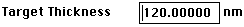
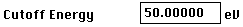
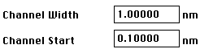

Clicking on and the other crystal check boxes
dictate to Desktop, how to calculate sample density. When one or more crystals
are checked density is an average of the crystals weighted by the relative
intensity option as defined in the Precipitate
Orientation Dialog Box.
Check if a graphical representation of the
path followed by each particle is of interest. Check to have a grid
ruler displayed to more easily understand beam spreading and energy distribution.
NOTE: Graphical representation when dealing with thousands of particles
will significantly increase the calculation and plotting time and will place
some stress on memory.
 is the sample thickness as set in the Sample
Dialog Box (Foil Normal)
 When a particle reaches an energy below this
value, the calculation will cease for that particular particle.
 Are used to set up the x axis of the subsequent plots.
The larger the channel width the fewer distinct values collected for numerical
evaluation. For example, for a sample thickness of 1200 nm and a channel
width of 10 nm, there will be 120 distinct pots in which an electron could
end its exsistance.
NOTE: To set-up beams not perpendicular to a sample surface, use
the Sample Dialog Box (Foil Normal),
deactivate the Foil Parallel check box and input the desired orientation
difference.